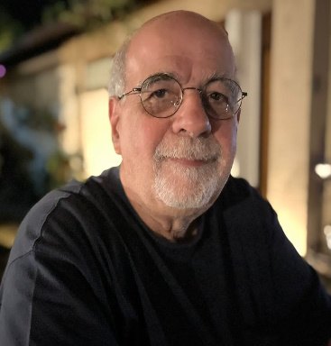
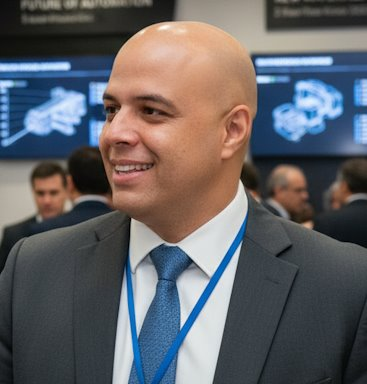
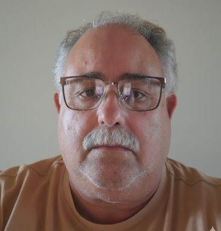
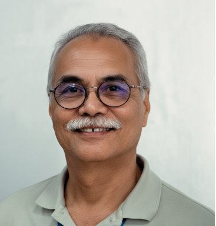
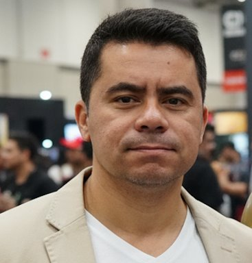
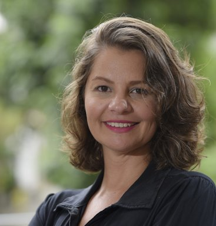
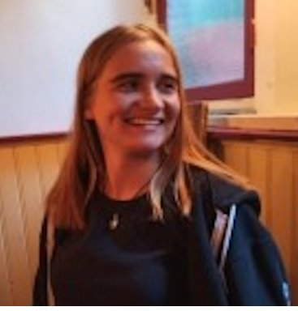
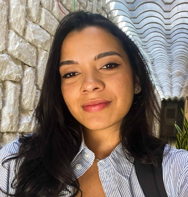

O Instituto de Energia da PUC-Rio reúne uma equipe de professores e pesquisadores com vasta experiência, que desenvolvem estudos em torno dos temas relacionados com a evolução tecnológica, organizacional, regulatória e institucional das indústrias de energia.
Equipe vinculada:








Bolsistas:


Além da equipe vinculada, o IEPUC desenvolve estudos em colaboração com parceiros internos e externos.